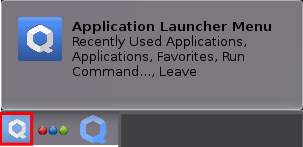

We believe security software like Whonix needs to remain Open Source and independent. Would you help sustain and grow the project? Learn more about our 14 year success story and maybe DONATE!
Qubes/InstallDocumentationQubes/UninstallPrevious page: Qubes/InstallIndex page: DocumentationNext page: Qubes/UninstallReinstall Qubes-Whonix™ Templates
How to Reinstall Qubes-Whonix Templates
Introduction
On occasion, it is necessary to reinstall a Whonix template from the Qubes repository. [1]
This chapter usually applies when the Template is:
- Outdated: To upgrade to a newer Point Release or a testers-only version of Whonix.
- Broken: Templates can become broken and/or unbootable for a
number of reasons, such as when removing meta-packages that Whonix "depends" on to
function properly, or after
 mixing packages from a later Debian release.
mixing packages from a later Debian release. - Misconfigured: Not all Template modifications are easily reversible. In some cases, it may be necessary to reinstall the Template.
- Compromised: Users may suspect their Template has been compromised. For further information on this topic, see Indicators of Compromise.
- Testing: To ensure high quality of future Whonix releases by becoming a Whonix tester.
Warning
 If the Whonix Template is broken, misconfigured, or potentially
compromised, discontinue using any App Qubes based on the affected
Template.
If the Whonix Template is broken, misconfigured, or potentially
compromised, discontinue using any App Qubes based on the affected
Template.
The reason is that any App Qubes based on the affected Template will
inherit the same issues. Disregarding this advice could lead to serious
consequences. For example, a core component of the Whonix security model
depends on sys-whonix to force all traffic through Tor or
block it. If sys-whonix is based on a Template with a
misconfigured or broken firewall, the Whonix security model would be
broken. [2]
Reinstallation Methods
Qubes has its own template reinstallation guide; however, this Whonix wiki entry should be preferred when reinstalling Qubes-Whonix Templates. The reason is that this guide is Whonix-specific and contains instructions on how to properly configure all settings. [3]
 Note: The root file system of the affected Template will be lost
during the reinstallation process. It is recommended that you create a
backup of any important files first.
Note: The root file system of the affected Template will be lost
during the reinstallation process. It is recommended that you create a
backup of any important files first.
Use one of the following methods:
- A) Uninstall Qubes-Whonix and then Install Qubes-Whonix; OR
- B) Follow the Reinstall the Whonix template instructions below.
Reinstall the Whonix template
UpdateVM Setting
Since only Fedora-based UpdateVMs support the
--action=upgrade option for reinstalling the Template, it
is recommended that you create a dedicated Qubes dom0
UpdateVM based on Qubes' Fedora template. Forcing dom0
updates over Tor is still possible by setting sys-whonix as
the NetVM for the UpdateVM. [4]
1. Create a new VM named
dom0-updatevm.
Qubes VM Manager → VM →
Create App Qube
- Name and label: Name the App Qube. Do not include any
personal information (if the App Qube is compromised, the attacker could
run
qubesdb-read /nameto reveal the VM name). Name the App Qube something generic, for example:dom0-updatevm. - Color: Choose a color label for the UpdateVM.
- Use this template: Choose the Fedora-based Template.
For example:
fedora-43. (There may be a higher version number than43available than there was at time time of writing.) - Standalone: Leave the Standalone field unchecked.
- Type: Choose the type
App Qube. - Allow networking: Choose the desired NetVM from the list. For
example:
sys-whonix. - Press:
OK.
2. Configure the NetVM setting of
dom0-updatevm.
- Option A, clearnet updates: If non-torified,
clearnet Qubes
dom0updates are preferred, then set the NetVM ofdom0-updatevm, for example, tosys-firewall.
Qube Manager → dom0-updatevm →
Qube settings →
Networking: sys-firewall → OK
[5]
- Option B, torified updates: If torified
Qubes
dom0updates are preferred, then set the NetVM ofdom0-updatevmto Whonix-Gateway™.
Qube Manager → dom0-updatevm →
Qube settings →
Networking: sys-whonix → OK
[6]
3. The process of configuring the UpdateVM is now complete. [7]
Update dom0
1
'''Launch a dom0 terminal.
Click the Qubes App Launcher (blue/grey "Q")
→ Open the Terminal Emulator (Qterminal)

'''2
Upgrade Qubes dom0. This step is
mandatory. [8]
sudo qubes-dom0-update
3 Done.
The dom0 upgrade has been completed.
Configure salt using Qubes dom0 Community Testing Repository
Optional.
 Testers only.
Testers only.
If you are an interested tester, click Learn More on the right.
The following command will configure Qubes dom0 salt to
use qubes-templates-community-testing for downloading
Whonix. [9]
sudo qubesctl top.enable qvm.whonix-testing pillar=true
The following steps to enable the
qubes-templates-community-testing repository should no
longer be necessary. Please report if these steps were necessary for
you.
If you are an interested tester, click Learn More on the right.
1. Enable
qubes-templates-community-testing repository.
View the Qubes
Templates .repo file.
cat /etc/yum.repos.d/qubes-templates.repo
2. Ensure the file contains
[qubes-templates-community-testing].
The following text should be included.
[qubes-templates-community-testing]
name = Qubes Community Templates repository
#baseurl = https://yum.qubes-os.org/r$releasever/templates-community-testing
metalink = https://yum.qubes-os.org/r$releasever/templates-community-testing/repodata/repomd.xml.metalink
enabled = 0
fastestmirror = 1
gpgcheck = 1
gpgkey = file:///etc/pki/rpm-gpg/RPM-GPG-KEY-qubes-$releasever-templates-community3. Fix any missing sections.
If the [qubes-templates-community-testing] section is
missing, then the user has probably already modified the file. In this
case dnf [10] preserves user changes by
saving updates to
/etc/yum.repos.d/qubes-templates.repo.rpmnew
[11] instead of overwriting the file. Since the
.repo.rpmnew file is ignored by
qubes-dom0-update, the .repo file must be
manually updated.
Either:
- Manually add the changes from
.repo.rpmnewto the.repofile; or - Overwrite the
.repofile with the.repo.rpmnewfile:- sudo cp /etc/yum.repos.d/qubes-templates.repo.rpmnew /etc/yum.repos.d/qubes-templates.repo
- And then manually add back necessary changes. If the command fails
because
/etc/yum.repos.d/qubes-templates.repo.rpmnewdoes not exist, then the user probably already has[qubes-templates-community-testing].
Reinstall
In the instructions below, a check is first made for a newer version of the Template.
- Upgrade if available: If a newer Template version exists,
install it (
upgrade). - Reinstall if not: If no newer Template version is available,
reinstall the existing version (
reinstall).
Unfortunately, there is no combined upgrade and reinstall command. [12]
1. Launch a dom0 terminal.
Click the Qubes App Launcher (blue/grey "Q")
→ Open the Terminal Emulator (Qterminal)
2. Try to upgrade the Template.
- Requirement: This will only work if a new Point Release of the Template is available.
- Template choice: Replace
qubes-template-packagewith eitherqubes-template-whonix-workstation-18orqubes-template-whonix-gateway-18. - Testers: Replace
--enablerepo=qubes-templates-communitywith--enablerepo=qubes-templates-community-testingif you are a tester.
qvm-template --enablerepo=qubes-templates-community upgrade <qubes-template-package>For example, to upgrade the whonix-gateway-18
Template:
qvm-template --enablerepo=qubes-templates-community upgrade whonix-gateway-18
For example, to upgrade the whonix-workstation-18
Template:
qvm-template --enablerepo=qubes-templates-community upgrade whonix-workstation-18
3. Check the command output. The following results are possible:
- Template was successfully upgraded: No further action required. Skip step four.
- No upgrade available: The Template is already the latest version. Proceed to step four to force a reinstall.
- Upgrade unsupported or failed: This may occur if your UpdateVM is not Fedora-based. Refer to UpdateVM Setting.
- Unexpected error: Could be caused by networking issues or repository problems. Investigate and retry as necessary.
4. Optional: Reinstall the Template.
- When to reinstall: If step two did not reinstall the Template (i.e. no new Point Release), you may force a reinstall here.
- Safety: Safe to run even if the Template is already up-to-date. It will simply be reinstalled.
qvm-template --enablerepo=qubes-templates-community reinstall <qubes-template-package>For example, to reinstall the whonix-gateway-18
Template:
qvm-template --enablerepo=qubes-templates-community reinstall qubes-template-whonix-gateway-18
For example, to reinstall the whonix-workstation-18
Template:
qvm-template --enablerepo=qubes-templates-community reinstall qubes-template-whonix-workstation-18
- Template reinstalled successfully: Reinstallation completed without issues.
- Error during reinstall: Likely caused by connectivity problems or misconfiguration. Review the error message and retry.
Settings
 This step is mandatory. [13]
This step is mandatory. [13]
Use salt to configure dom0 settings.
[14]
sudo qubesctl state.sls qvm.anon-whonix
Optional Steps
Whonix Disposable Template
Qubes-Whonix Disposable Template can optionally be set up as a base for Disposables. [15]
In dom0, run.
sudo qubesctl state.sls qvm.whonix-workstation-dvm
Updates over Tor
Templates
To force all Template updates over Tor, use
qubesctl in dom0. [16]
sudo qubesctl state.sls qvm.updates-via-whonix
To undo this setting, modify,
- Qubes R4.3:
/etc/qubes/policy.d/50-config-updates.policy
in dom0. [17] See also How-to: Fix dom0
Qubes-Whonix™ UpdatesProxy Settings.
dom0
To force dom0 updates over Tor, set Qubes'
dom0 UpdateVM to sys-whonix.
[18]
Qube Manager→System→Global Settings→Dom0 UpdateVM:sys-whonix→OK
To revert this change, set Qubes' dom0 UpdateVM to
sys-firewall or another preferred VM.
[19]
Qubes Manager→System→Global Settings→Dom0 UpdateVM:sys-firewall→OK
Enable AppArmor
AppArmor is enabled by default. No extra steps required.
Final Steps
Restart App Qubes
Any VMs based on the reinstalled Template must be restarted to reflect the updated file system.
Update and Launch Applications
Before starting applications in the Whonix-Workstation™ App Qube, update both Whonix-Gateway™ and Whonix-Workstation™ Templates.
To launch an application like Tor Browser:
Qubes App Launcher (blue/grey "Q")→Domain: anon-whonix→Tor Browser (AnonDist)
Done
The process of reinstalling Qubes-Whonix Templates is now complete.
Footnotes
- https://www.qubes-os.org/doc/how-to-reinstall-a-template/
- Technical Introduction: With more technical terms
- Using salt.
- *
sys-net→sys-firewall→sys-whonix→UpdateVM*UpdateVM→sys-whonix→sys-firewall→sys-net - qvm-prefs updatevm-name netvm sys-whonix
- qvm-prefs updatevm-name netvm sys-whonix
- If the
dom0UpdateVM is based on a Template that is broken or no longer trusted (the Template is broken, misconfigured, or compromised), an alternate UpdateVM can be used temporarily. In other words, more specifically, if the Whonix-Gateway Template (whonix-gateway-18) and/or its Whonix-Gateway ProxyVM (sys-whonix) are no longer trusted, then configure Qubesdom0to use a different UpdateVM by applying the following steps. TODO - Upgrading Qubes
dom0is required to ensure: * The version file/srv/formulas/base/virtual-machines-formula/qvm/whonix.jinjacontains the current version number of Whonix and is up to date. * A recent version of Qubes repository definition files. * Qubes salt. * qubes-core-admin-addon-whonix. * qubes-mgmt-salt-dom0-virtual-machines, ensuring it is installed and up to date. Older, similar references: * https://github.com/QubesOS/qubes-mgmt-salt-dom0-virtual-machines/pull/17 * https://github.com/QubesOS/updates-status/issues/1184 * https://forums.whonix.org/t/14-15-issues-uninstall-install/7652 - * qubes-mgmt-salt-dom0-virtual-machines v4.0.13 (r4.0) * Qubes-Whonix™ salt - allow choice of repository / don't hardcode repository * whonix: Add pillar file for easily enabling templates testing repository
- This is invoked by
qubes-dom0-update. - Note the file extension
.repo.rpmnew. - qubes-dom0-update combined upgrade reinstall command
- phase out manual use of qubes-dom0-update by user / replace it by salt
- Dev/Qubes#salt
- For developers only, link to related source code file: https://github.com/QubesOS/qubes-mgmt-salt-dom0-virtual-machines/blob/master/qvm/whonix-workstation-dvm.sls
- * By Qubes default, Qubes UpdatesProxy (RPC / qrexec based) is used
to update Templates. * Qubes:
How to install software, technical details * Qubes
saltmanagement stackqubesctl* For developers only, related source code file: https://github.com/QubesOS/qubes-mgmt-salt-dom0-virtual-machines/blob/master/qvm/updates-via-whonix.sls - How to change Template update method from Whonix to just another appvm?
- Or manually set the torified UpdateVM in
dom0terminal. qubes-prefs updatevm sys-whonix - To revert this change in
dom0terminal, run. qubes-prefs updatevm sys-firewall
Categories: Documentation